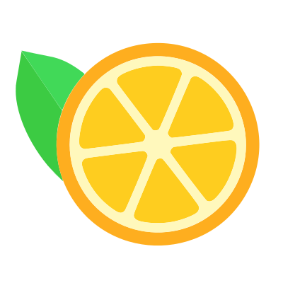
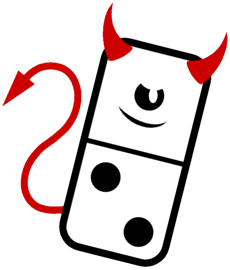

Personal Project Portfolio
Qwertle
In early 2022, I created a spin off to the popular web game "Wordle" called "Qwertle", in which users try to find the day's 4 randomly generated letters in 7 guesses or less. I created this to learn more about browser storage, UI, and most importantly to anger my friends.
Fresh
Fresh is a modern, lightweight web framework designed around ease of use for developers of any profeciency. Creating custom websites is easier than ever, and the entire framework is fully customizeable. Using Fresh is as easy as linking the CDN or downloading the project from Github.
Fractyl Development
In early 2018, I helped found a local software development company. I developed the website, as well as user interface for their apps in production. Although I do not currently work with them, the software they are developing is crazy cool and innovative.
Domaniacal
In early 2020, I created a card game based around dominos, entitled Domaniacal. I raised over $2,500 on Kickstarter to professionally create the game, and it is now for sale.
Client Website Development
Red Rice Project
Developed website for local technology competition group, focused on genetically modified rice. Skills I gained from this project include copywriting for dense and highly technical content and working in a diverse team.
Waypoint Communications
Developed marking and internal administration websites for newest FractylDev application in development. Additionally, I developed the User Interface for the application.
The Morse Project
Developed the official website for Fractyl Development's first application, a morse code communication and learning app.